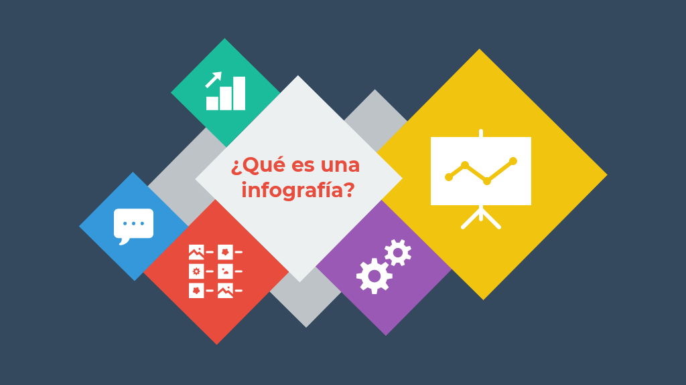

Introduccion
Este portafolio tiene como fin probar nuestras habiliadades desarrollando Web's.

Infografias
Aca podras encontrar diferentes infografias mediante la Interfaz del usuario.

PDF'S
Podemos ver diferentes mantenimientos a Fuentes de alimenatacion y Tipos de Tarjetas de Expansion.

Mantenimiento de Computadoras
Podemos encontrar diferentes problemas y como ensamblar un pc, todos los componentes que posee las cuales la hacen funcionar.